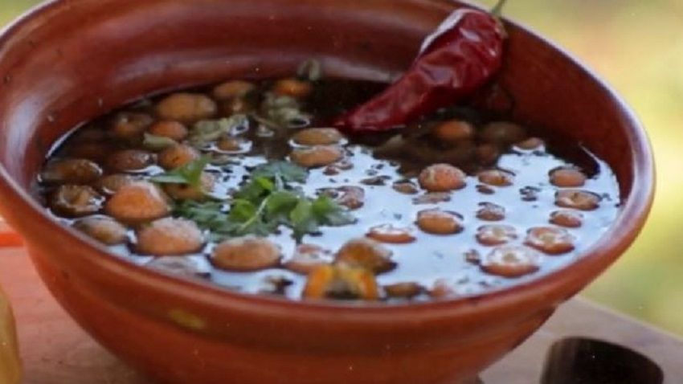

Caldo de Diguenies

Descripcion
Si quieres mantener tu cuerpo tibio en esos días fríos de primavera y fortalecer los músculos,
consumiendo un plato rico en fibras y proteínas vegetal, nuestra receta de Caldo de Digueñes es el ideal.
Típico de la gastronomía Mapuche, de rico y delicado de gran sabor enamorando los más exigentes paladares,
típico de los bosques del centro y sur de Chile.
Ingredientes
- ½ taza de harina tostada diluida en agua
- 5 tazas de agua fría
- 8 gr de hierba buena seca
- 1 taza de Digüeñes medianos
- ½ cebolla
- Perejil
- Sal y Pimienta al gusto
Preparacion
- La cebolla se lava cuidadosamente,
se limpia y pica en una tabla en cuadritos pequeños reservándose.
- Coloca una olla pequeña a fuego medio agregándole un poco de aceite, cuando este caliente,
incorpora la cebolla picada en cuadritos y se saltea removiendo con una paleta de madera por un tiempo aproximado de 8 minutos,
realizando un delicado sofrito.
- Al sofrito
se le añade la mezcla de harina tostada diluida en agua, removiendo constantemente.
- Se agregan las 5 tazas de agua fría sin dejar de remover para no crear grumos en el caldo,
salpimentamos y añadimos el perejil triturado, dejando por 2 minutos.
- Incorporamos los Digueñes previamente limpios, troceados delicadamente o completos según
el gusto y preferencia de los comensales, continuamos mezclando con la paleta de madera por 3 minutos
y finalizamos la cocción incorporando muy bien todos los ingredientes.
- Sírvase bien caliente, decorando con crotones de pan y
un poco de perejil fresco picado nuestra receta de Caldo de Digueñes.